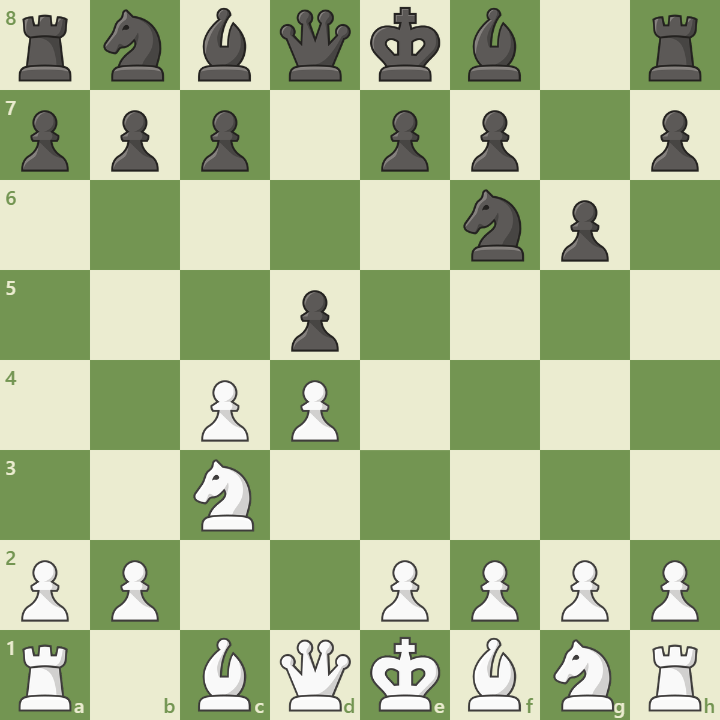

Overview
The Grünfeld Defense is a hypermodern opening where Black allows White to build a strong center, then attacks it. It begins with:
1. d4 Nf6 2. c4 g6 3. Nc3 d5
Black challenges the center early and aims for dynamic counterplay. It’s favored by players who enjoy active piece play and imbalanced positions.
Opening Diagram
This position arises after 3...d5, striking at White’s center and inviting complexity.
Main Variations
- Exchange Variation: cxd5 – leads to sharp play
- Russian System: Nf3, Qb3 – pressure on d5
- Modern Exchange: Be3, Rc1 – deep preparation
Strategic Themes
- Undermining White’s center with ...c5 and ...Nc6
- Active piece coordination and open lines
- Requires precise calculation and timing